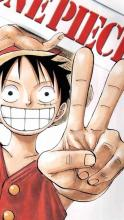

凌晨

蒙奇·D·路飞是在漫画及改编动画《航海王》中登场的虚拟角色，男主角，草帽海贼团船长。由于他的标志性特征是一顶草帽，因此常被直接称呼为草帽小子或者草帽路飞。梦想是找到传说中的One Piece，成为海贼王。
蒙奇·D·路飞性格积极乐观，爱憎分明且十分重视伙伴，不甘屈居于他人之下，对任何危险的事物都超感兴趣。和其他传统的海贼所不同的是，他并不会为了追求财富而无故杀戮，而是享受着身为海贼的冒险和自由。和红发香克斯是好友，并继承了海贼王的草帽。现为了打倒四皇中的百兽凯多，与罗，毛皮族和武士忍者组成同盟，兵分四路，来到蛋糕岛接回山治，并与甚平重逢。